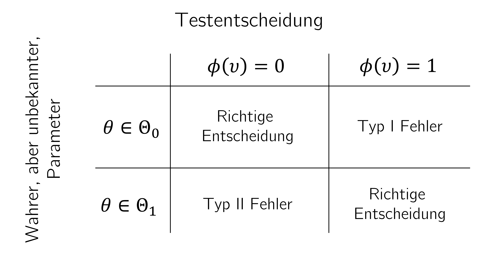
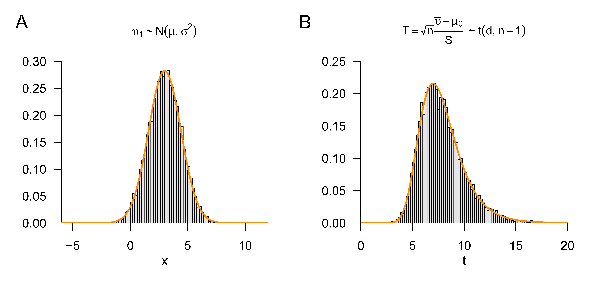
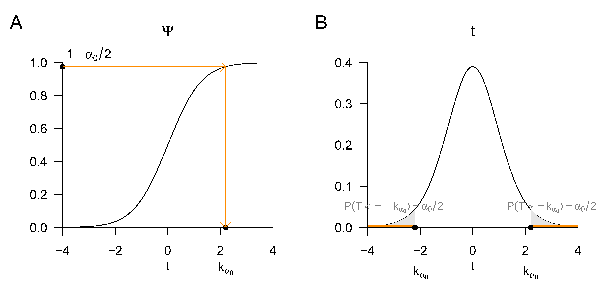
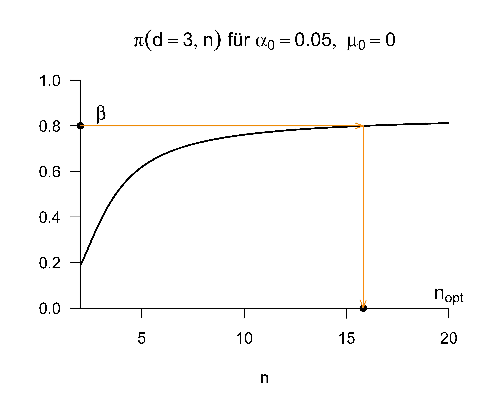

Die grundlegende Logik Frequentistischer Hypothesentests kann am Beispiel eines Normalverteilungsmodells für einen beobachteten univariaten Datensatz \(y_1,...,y_n\) grob wie folgt umrissen werden. Man unterstellt zunächst, dass der beobachtete Datensatz eine Realisierung der Stichprobe \(\upsilon_1,...,\upsilon_n \sim N(\mu,\sigma^2)\) ist und berechnet dann basierend auf dem Datensatz eine Teststatistik, zum Beispiel das anhand der Stichprobenstandardabweichung und der Stichprobengröße normalisierte Stichprobenmittel \(\sqrt{n}\frac{\bar{y}}{s}\)
Man fragt sich dann, wie wahrscheinlich es wohl wäre, den beobachteten oder einen extremeren Wert der Teststatistik unter der Annahme eines Nullmodels zu observieren. Dabei versteht man unter einem Nullmodell intuitiv ein Wahrscheinlichkeitsverteilungsmodell bei dem kein “interessanter Effekt” vorliegt, also im Sinne des Normalverteilungsmodells zum Beispiel \(\mu = 0\) gilt. Dabei ist der Begriff der Wahrscheinlichkeit natürlich Frequentistisch zu verstehen, also als idealisierte relative Häufigkeit, wenn man viele Stichprobenrealisationen des Nullmodels generieren würde. Je nach Beschaffenheit des zugrundliegenden Frequentistischen Inferenzmodells und der betrachteten Teststatistik kann es dabei durchaus möglich sein, diese Wahrscheinlichkeit exakt zu bestimmen.
Ist nun die betrachtete Wahrscheinlichkeit dafür, den beobachteten oder einen extremeren Wert der Teststatistik unter Annahme des Nullmodells zu observieren groß, so schließt man intuitiv, dass “es wohl ganz plausibel ist, dass das Nullmodel die Daten generiert hat”. Im Wissenschaftsjargon spricht dann manchmal von einem “statistisch nicht-signifikanten Ergebnis”. Ist die betrachtete Wahrscheinlichkeit dafür, den beobachteten oder einen extremeren Wert der Teststatistik unter Annahme des Nullmodells zu observieren dagegen klein, so schließt man intuitiv, dass “es wohl nicht so plausibel, dass das Nullmodel die Daten generiert hat”. Im Wissenschaftsjargon spricht man in diesem Fall manchmal von einem “statistisch signifikanten Ergebnis”.
Wie immer in der Frequentistischen Statistik weiß man nach Durchführung einer solchen Prozedur natürliich nicht, ob im vorliegenden Fall nun wirklich das Nullmodel oder ein anderes Modell die Daten generiert hat, sondern man weiß nur, wie oft man bei dieser Prozedur im Mittel richtig oder falsch liegen würde, wenn alle Annahmen zuträfen und man diese Prozedur sehr oft wiederholen würde.
In den folgenden Abschnitten wollen wir diese intuitiven Gedanken formalisieren. Dabei ist es wichtig, immer zwischen “Hypothesen” im Sinne der Frequentistischen Inferenz und dem generellen Begriff der wissenschaftlichen Hypothese zu unterscheiden. Das Aufstellen einer wissenschaftlichen Hypothese bedingt keinesfalls, dass ein Frequentistischer Hypothesentest anzuwenden ist, sondern lediglich, so man denn quantitativ arbeiten möchte, dass es Sinn macht seine Unsicherheit im Lichte beobachteter Daten, die potentiell über die (wissenschaftliche) Hypothese aussagekräftig sind, zu quantifizieren und zu kommunizieren. Frequentistische Hypothesentests sind nur eine der vielen Möglichkeiten, dies zu tun, wenn auch eine sehr populäre. Es sei trotzdem schon an dieser Stelle erwähnt, dass das “Nullhypothesen-Signifikanz-Testen”, wie im folgenden dargelegt, im wissenschaftlichen Kontext durchaus nicht unumstritten ist (vgl. zum Beispiel Amrhein & Greenland (2018) und McShane et al. (2019)).
24.1 Testhypothesen und Tests
Im Kontext von Frequentistischen Hypothesentests wird der Begriff des Frequentistischen Inferenzmodells (vgl. Definition 21.1) zunächt durch die sogenannten Testhypothesen zu einem Testszenario erweitert. Wir nutzen folgende Definition.
Definition 24.1 (Testhypothesen und Testszenario) Gegeben sei ein Frequentistisches Inferenzmodell mit Stichprobe \(\upsilon\), Ergebnisraum \(\mathcal{Y}\) und Parameterraum \(\Theta\). Weiterhin sei \(\{\Theta_0,\Theta_1\}\) eine Partition des Parameterraums, so dass \[\begin{equation}
\Theta = \Theta_0 \cup \Theta_1 \mbox{ und } \Theta_0 \cap \Theta_1 = \emptyset.
\end{equation}\] Dann ist eine Testhypothese eine Aussage über den wahren, aber unbekannten, Parameterwert \(\theta\) in Hinblick auf die Untermengen \(\Theta_0\) und \(\Theta_1\) des Parameterraums. Speziell werden die Aussagen
\(\theta \in \Theta_0\) als Nullhypothese und
\(\theta \in \Theta_1\) als Alternativhypothese
bezeichnet. Der Einfachheit halber bezeichnet man auch \(\Theta_0\) und \(\Theta_1\) direkt als Nullhypothese und Alternativhypothese, respektive. Die Einheit aus Frequentistischem Inferenzmodell und Testhypothesen wird als Testszenario bezeichnet.
Je nach Beschaffenheit von \(\Theta_0\) und \(\Theta_1\) unterscheidet man einerseits einfache und zusammengesetzte und andererseits einseitige und zweiseitige Testhypothesen.
Definition 24.2 (Einfache und zusammengesetzte Testhypothesen) Für die Testhypothesen \(\Theta_i\) mit \(i = 0,1\) gilt:
Enthält \(\Theta_i\) nur ein einziges Element, so heißt \(\Theta_i\)einfach.
Enthält \(\Theta_i\) mehr als ein Element, so heißt \(\Theta_i\)zusammengesetzt.
Man beachte, dass da nach Annahme der wahre, aber unbekannte, Parameter \(\theta\) die Verteilung \(\mathbb{P}_\theta\) der Stichprobe festlegt, eine einfache Testhypothese der Festlegung der Verteilung der Stichprobe auf genau eine Verteilung entspricht. Eine zusammengesetzte entspricht dagegen einer Menge möglicher Verteilungen der Stichprobe. Ein Beispiel für eine einfache Testhypothese in einem Testszenario mit Parameterraum \(\Theta := \mathbb{R}\) ist \[\begin{equation}
\Theta_0 := \{0\},
\end{equation}\] die entsprechend zusammengesetzte Alternativhypothese ist dann gegeben durch \[\begin{equation}
\Theta_1 = \mathbb{R} \setminus \{0\}.
\end{equation}\] Die Nullhypothese, also die Aussage “\(\theta \in \Theta_0\)” entspricht dann der Aussage “\(\theta = 0\)”, da \(\Theta_0\) nur eben dieses eine Element enthält.
Ist wie in diesem Beispiel der Parameterraum eindimensional, so unterscheidet man weiterhin einseitige und zweiseitige Null- und Alternativhypothesen.
Definition 24.3 (Einseitige und zweiseitige Testhypothesen) Gegeben sei ein Testszenario mit eindimensionalem Parameteraum \(\Theta := \mathbb{R}\) und es sei \(\theta_0 \in \Theta\). Dann werden zusammengesetzte Nullhypothesen der Form \(\Theta_0 := ]-\infty,\theta_0]\) oder \(\Theta_0 := [\theta_0,\infty[\)einseitige Nullhypothesen genannt und auch in der Form \(H_0:\theta \le \theta_0\) bzw. \(H_0 : \theta \ge \theta_0\) geschrieben. Die entsprechenden Alternativhypothesen haben dabei die Form \(\Theta_1 := ]\theta_0,\infty[\) bzw. \(\Theta_1:= ]-\infty, \theta_0[\), auch geschrieben als \(H_1:\theta>\theta_0\) bzw. \(H_1:\theta < \theta_0\). Bei einer einfachen Nullhypothese der Form \(\Theta_0 := \{\theta_0\}\), auch geschrieben als \(H_0:\theta = \theta_0\), wird die Alternativhypothese \(\Theta_1 := \Theta \setminus \{\theta_0\}\), auch geschrieben als \(H_1:\theta \neq \theta_0\), zweiseitige Alternativhypothese genannt.
Vor dem Hintergrund eines Testszenarios definieren wir nun den Begriff des Hypothesentests, den wir kurz einfach als Test bezeichnen wollen.
Definition 24.4 (Test) Gegeben sei ein Testszenario. Dann ist ein Test eine Abbildung \(\phi\) aus dem Ergebnisraum der Stichprobe \(\mathcal{Y}\) in die Menge \(\{0,1\}\), also \[\begin{equation}
\phi : \mathcal{Y} \to \{0,1\}, y \mapsto \phi(y),
\end{equation}\] wobei
\(\phi(y) = 0\) den Vorgang des Nichtablehnens der Nullhypothese und
\(\phi(y) = 1\) den Vorgang des Ablehnens der Nullhypothese
repräsentieren.
Die Formalisierung des Testbegriffs ist nicht trivial, da Tests, wie Schätzer und Konfidenzintervalle, Funktionen von Zufallsvariablen, nämlich gerade den Stichprobenvariablen sind. Eigentlich sind Tests damit auf Zufallsvektorräumen definiert. Der Einfachheit halber betrachten wir in Definition 24.4 eine konkrete Realisierung \(y \in \mathcal{Y}\) der Stichprobe \(\upsilon\), die durch \(\phi\) in die Menge \(\{0,1\}\) abgebildet wird. Der Funktionswert \(\phi(y)\) von \(\phi\) ist vor diesem Hintergrund also eine Realisierung der Zufallsvariable \(\phi(\upsilon)\).
In der Anwendung ist man oft an Tests interessiert, die eine bestimmte Struktur haben, wir formalisieren diese unter dem Begriff der Standardtests.
Definition 24.5 (Standardtest) Gegeben sei ein Testszenario. Dann ist ein Standardtest\(\phi\) definiert als die Verkettung einer Teststatistik\[\begin{equation}
\gamma : \mathcal{Y} \to \Gamma
\end{equation}\] und einer Entscheidungsregel\[\begin{equation}
\delta : \Gamma \to \{0,1\}
\end{equation}\] kann also geschrieben werden als \[\begin{equation}
\phi := \delta \circ \gamma : \mathcal{Y} \to \{0,1\}.
\end{equation}\]
Wie oben angemerkt gibt es auch bei Definition 24.5 zu beachten, dass die Teststatistik eigentlich eine Funktion der Stichprobenvariablen, also von Zufallsvariablen ist, die wir hier als Funktion der Werte dieser Zufallsvariablen in \(\mathcal{Y}\) definiert haben. Ebenso gibt es zu beachten, dass die Entscheidungsregel eine Funktion der somit zufälligen Teststatistik ist, die wir hier gleichfalls als Funktion der Werte dieser Zufallsvariable mit Ergebnisraum \(\Gamma\) geschrieben haben. Sowohl Teststatistik und Entscheidungsregel sind in einem Testszenario also Zufallsvariablen. Entsprechend ist, wenn \(y\) eine Realisierung der Stichprobe \(\upsilon\) ist, \(\gamma(y) \in \Gamma\) eine Realisierung von \(\gamma(\upsilon)\) und \((\delta \circ \gamma)(y)\) eine Realisierung von \((\delta \circ \gamma)(\upsilon)\).
Die verteilungstheoretischen Eigenschaften eines Tests ergeben sich aus den ihnen zugrundeliegenden verteilungstheoretischen Eigenschaften des entsprechenden Frequentistischen Inferenzmodells und damit natürlich insbesondere der Verteilung der Stichprobenvariablen. Eine wichtige Brücke zwischen diesen beiden Ebenen der Verteilung der Stichprobenvariablen auf der einen Seite und der Verteilung der Testergebnisse auf der anderen Seite bilden die Begriffe des kritischen Bereichs und des Ablehnungsbereichs eines Tests.
Definition 24.6 (Kritischer Bereich eines Tests) Gegeben sei ein Testszenario und ein Test \(\phi\). Dann heißt die Untermenge \(K\) des Ergebnisraums \(\mathcal{Y}\) der Stichprobe \(\upsilon\), für die der Test den Wert 1 annimmt, kritischer Bereich des Tests, formal \[\begin{equation}
K := \{y \in \mathcal{Y} |\phi(y) = 1 \} \subset \mathcal{Y}.
\end{equation}\]
Man beachte, dass vor dem Hintergrund von Definition 24.6 die zufälligen Ereignisse \(\{\upsilon\in K\}\) und \(\{\phi(\upsilon) = 1\}\), also dass die Stichprobe einen Wert im kritischen Bereichs des Tests annimmt bzw. dass der Test den Wert 1 annimmt, äquivalent sind und damit insbesondere auch die gleiche Wahrscheinlichkeit haben. Fragt man also nach der Wahrscheinlichkeit, dass ein Test den Wert 1 annimmt, also die Nullhypothese abgelehnt wird, so entspricht diese Wahrscheinlichkeit genau der Wahrscheinlichkeit, dass die Stichprobe einen Wert im kritischen Bereichs des Tests annimmt. Da die Verteilung der Stichprobe aber als bekannt vorausgesetzt ist, kann die Wahrscheinlichkeit für das Ablehnen der Nullhypothese darauf basierend bestimmt werden. Hat man insbesondere einen Standardtest vorliegen, so überträgt sich das Gesagte unmittelbar auch auf die zwischen Stichprobe und Test geschaltete Teststatistik. Dies führt auf die folgende Definition.
Definition 24.7 (Ablehnungsbereich eines Standardtests) Gegeben sei ein Testszenario und ein Standardtest \(\phi\) mit Teststatistik \(\gamma\). Die Untermenge \(A\) des Ergebnisraums \(\Gamma\) der Teststatistik, für die der Test den Wert 1 annimmt, Ablehnungsbereich des Tests, formal \[\begin{equation}
A := \{\gamma(y) \in \Gamma |\phi(y) = 1 \} \subset \Gamma.
\end{equation}\]
Wie zum Begriff des kritischen Bereichs angemerkt gilt auch hier, dass die Ereignisse \(\{\phi(\upsilon) = 1\}\) und \(\{\gamma(\upsilon) \in A\}\) äquivalent sind und damit insbesondere auch die gleiche Wahrscheinlichkeit besitzen. Insgesamt gelten mit Definition 24.6 und Definition 24.7 für einen Standardtest also \[\begin{equation}
\{\upsilon\in K\} \Leftrightarrow \{\gamma(\upsilon) \in A\} \Leftrightarrow \{\phi(\upsilon) = 1\}
\end{equation}\] und \[\begin{equation}
\mathbb{P}_{\theta}\left(\{\upsilon\in K\}\right)
=
\mathbb{P}_{\theta}\left(\{\gamma(\upsilon) \in A\}\right)
=
\mathbb{P}_{\theta}\left(\{\phi(\upsilon) = 1\}\right),
\end{equation}\] wobei das Subskript \(\theta\) bei der Verteilung der Teststatistik und des Tests andeuten soll, dass diese Verteilungen durch den Parameter der Stichprobenverteilung festgelegt sind.
In der Anwendung basiert die in Definition 24.5 allgemein angebene Form der Entscheidungsregel eines Standardtest meist darauf, dass eine beobachtete Teststatistik mit Ergebnisraum \(\Gamma := \mathbb{R}\) einen bestimmten sogenannten kritischen Wert\(k\in \mathbb{R}\) überschreitet oder unterschreitet. Dies führt auf die Konzepte der einseitigen und zweiseitigen kritischen Wert-basierte Tests.
Definition 24.8 (Kritischer Wert-basierte Tests) Ein kritischer Wert-basierter Test ist ein Standardtest, bei dem die Entscheidungsregel \(\delta\) von einem kritischen Wert \(k\) der Teststatistik mit Ergebnisraum \(\mathbb{R}\) abhängt. Speziell ist
ein einseitiger kritischer Wert-basierter Test von der Form \[\begin{equation}
\phi : \mathcal{Y} \to \{0,1\}, y \mapsto \phi(y) := 1_{\{\gamma(y) \ge k\}} =
\begin{cases}
1 & \gamma(y) \ge k \\
0 & \gamma(y) < k
\end{cases},
\end{equation}\]
ein zweiseitiger kritischer Wert-basierter Test von der Form \[\begin{equation}
\phi : \mathcal{Y} \to \{0,1\}, y \mapsto \phi(y) := 1_{\{|\gamma(y)| \ge k\}} =
\begin{cases}
1 & |\gamma(y)| \ge k \\
0 & |\gamma(y)| < k
\end{cases}.
\end{equation}\]
Mit der Definition kritischer Wert-basierter Tests ist die praktische Durchführung eines Hypothesentests nun vorgezeichnet. Wie immer in der Frequentistischen Inferenz legt man vorliegenden Daten zunächst ein Frequentistisches Inferenzmodell zugrunde, nimmt also an, dass die vorliegenden Daten eine Realisierung einer Stichprobe sind. Basierend auf dieser Realisierung berechnet man eine Teststatistik und vergleicht diese abschließend mit einem kritischen Wert, um dann entweder die Nullhypothese nicht abzulehnen oder die Nullhypothese abzulehnen. Im folgenden Abschnitt wollen wir nun der Frage nachgehen, wie vor dem Hintergrund von Null- und Alternativhypothese dabei der kritische Wert eines kritischen Wert-basierten Tests so bestimmt werden kann, dass man im Sinne der Frequentistischen Wahrscheinlichkeit möglichst gute Testentscheidungen trifft.
24.2 Testgütekriterien und Testkonstruktion
Die Tatsache, dass in einem Testszenario der wahre, aber unbekannte, Parameter im Bereich der Nullhypothese oder der Alternativhypothese liegen kann und man gleichzeitig basierend auf dem Wert des Tests die Nullhypothese entweder ablehnen oder nicht ablehnen kann, impliziert, dass eine Testentscheidung richtig oder falsch sein kann. Untenstehende Definition soll dahingehend zunächst begriffliche Klarheit schaffen.
Definition 24.9 (Richtige Testentscheidungen und Testfehler) Gegeben seien ein Testszenario und ein Test. Dann gibt es mit dem Nichtablehnen der Nullhypothese \(\phi(y) = 0\), wenn die Nullhypothese \(\theta \in \Theta_0\) zutrifft und dem Ablehnen der Nullhypothese \(\phi(y) = 1\), wenn die Alternativhypothese \(\theta \in \Theta_1\) zutrifft zwei Formen der richtigen Testentscheidung. Ebenso gibt es zwei Arten von Testfehlern: Das Ablehnen der Nullhypothese \(\phi(y) = 1\), wenn die Nullhypothese \(\theta \in \Theta_0\) zutrifft, heißt Typ I Fehler und das Nichtablehen der Nullhypothese, wenn die Alternativhypothese \(\theta \in \Theta_1\) zutrifft, heißt Typ II Fehler.

Abbildung 24.1: Richtige Testentscheidungen und Typ I und Typ II Fehler
Abbildung 24.1 gibt eine Übersicht zu den möglichen richtigen Testentscheidungen und Testfehlern bei Durchführung eines Tests. Natürlich möchte man generell meist eine richtige Testentscheidung treffen. Das entscheidene Werkzeug, um vor dem Frequentistischen Hintergrund des Testszenarios gute Tests zu konstruieren, ist die sogenannte Testgütefunktion.
Definition 24.10 (Testgütefunktion) Gegeben sei ein Testszenario und ein Test \(\phi\). Dann ist die Testgütefunktion von \(\phi\) definiert als \[\begin{equation}
q_{\phi} : \Theta \to [0,1], \theta \mapsto q_{\phi}(\theta) := \mathbb{P}_\theta(\phi(\upsilon) = 1).
\end{equation}\] Für \(\theta \in \Theta_1\) heißt \(q_\phi\) auch Trennschärfefunktion oder Powerfunktion.
Man beachte, dass \(\mathbb{P}_\theta\) in Definition 24.10 die Verteilung der Zufallsvariable \(\phi(\upsilon)\) unter der Annahme, dass die Verteilung von \(\upsilon\) durch \(\theta\) festgelegt ist, bezeichnen soll. Für jedes \(\theta \in \Theta\) liefert \(q_\phi\) also die die Wahrscheinlichkeit dafür, dass die Nullhypothese durch den Test \(\phi\) abgelehnt wird. Für diese Wahrscheinlichkeiten gelten insbesondere mit den Begriffen des kritischen Bereichs (vgl. Definition 24.6) und des Ablehnungsbereichs (vgl. Definition 24.7) wie bereits gesehen \[\begin{equation}
\mathbb{P}_\theta(\phi(\upsilon) = 1)
= \mathbb{P}_\theta(\gamma \in A)
= \mathbb{P}_\theta (\upsilon \in K).
\end{equation}\] Die Testgütefunktion ist spezifisch für einen gegebenen Test. Ändert sich der Test, zum Beispiel, weil bei einem kritischen Wert-basierten Test ein anderer kritischer Wert gewählt wird, ändern sich obige Wahrscheinlichkeiten und damit die Testgütefunktion.
Mithilfe der Testgütefunktion folgt die Testkonstruktion dann folgenden Überlegungen. Im Idealfall hätte man einen Test \(\phi\) mit \[\begin{equation}
q_\phi(\theta) = \mathbb{P}_\theta(\phi(\upsilon) = 1) = 0 \mbox{ für } \theta \in \Theta_0 \mbox{ und }
q_\phi(\theta) = \mathbb{P}_\theta(\phi(\upsilon) = 1) = 1 \mbox{ für } \theta \in \Theta_1.
\end{equation}\] Die Testentscheidung eines solchen Tests wäre mit Wahrscheinlichkeit 1 richtig, da ein solcher Test die Nullhypothese mit Wahrscheinlichkeit 0 ablehnt, wenn sie zutrifft, und die Nullhypothese mit Wahrscheinlichkeit 1 ablehnt, wenn sie nicht zutrifft. Allgemeiner sind natürlich kleine Werte von \(q_\phi\) für \(\theta \in \Theta_0\), also kleine Wahrscheinlichkeiten dafür, die Nullhypothese abzulehnen, wenn sie zutrifft, und große Werte von \(q_\phi\) für \(\theta \in \Theta_1\), also große Wahrscheinlichkeiten dafür, die Nullhypothese abzulehnen, wenn sie nicht zutrifft, zur Testfehlerminimierung günstig. Allerdings bestehen im Allgemeinen Abhängigkeiten zwischen den Werten der Testgütefunktion für \(\theta \in \Theta_0\) und \(\theta \in \Theta_1\), wie folgende Beispiele illustrieren sollen.
Beispiel (A) Es sei \(\phi_a\) ein Test definiert durch \[\begin{equation}
\phi_a : \mathcal{Y} \to \{0,1\}, y \mapsto \phi_a(y) := 0.
\end{equation}\]\(\phi_a\) sei also ein Test, der die Nullhypothese unabhängig von den beobachteten Daten nie ablehnt. Für \(\phi_a\) gilt dann \[\begin{equation}
q_{\phi_a}(\theta) = \mathbb{P}_\theta(\phi(\upsilon) = 1) = 0 \mbox{ für } \theta \in \Theta_0.
\end{equation}\] Allerdings gilt für \(\phi_a\) dann auch automatisch \[\begin{equation}
q_{\phi_a}(\theta) = \mathbb{P}_\theta(\phi(\upsilon) = 1) = 0 \mbox{ für } \theta \in \Theta_1.
\end{equation}\]\(\phi_a\) hat also eine minimale Sensitivität dafür, die Tatsache, dass die Alternativhypothese zutrifft, zu detektieren.
Beispiel (B) Andersherum sei \(\phi_b\) ein Test definiert durch \[\begin{equation}
\phi_b : \mathcal{Y} \to \{0,1\}, y \mapsto \phi_b(y) := 1.
\end{equation}\]\(\phi_b\) sei also ein Test, der die Nullhypothese, unabhängig von den beobachteten Daten immer ablehnt. Für \(\phi_b\) gilt dann \[\begin{equation}
q_{\phi_b}(\theta) = \mathbb{P}_\theta(\phi(\upsilon) = 1) = 1 \mbox{ für } \theta \in \Theta_1.
\end{equation}\]\(\phi_b\) ist also maximal sensitiv für das Zutreffen der Alternativhypothese. Allerdings gilt für \(\phi_b\) dann auch automatisch \[\begin{equation}
q_{\phi_b}(\theta) = \mathbb{P}_\theta(\phi(\upsilon) = 1) = 0 \mbox{ für } \theta \in \Theta_0,
\end{equation}\] und \(\phi_b\) resultiert auch immer in der Ablehnung der Nullhypothese, wenn diese zutrifft und generiert in diesem Sinne viele falsch positive Resultate.
Vor dem Hintergrund dieser beiden Extremszenarien muss es also das Ziel der Testkonstruktion sein, eine angemessene Balance zwischen kleinen Werten der Testgütefunktion bei Zutreffen der Nullhypothese und großen Werten der Testgütefunktion bei Zutreffen der Alternativhypothese zu finden. Die populärste Methode, dies zu erreichen ist es, in einem ersten Schritt einen kleinen Wert \(\alpha_0 \in [0,1]\) zu wählen und sicherzustellen, dass \[\begin{equation}\label{eq:significance}
q_\phi(\theta) \le \alpha_0 \mbox{ für alle } \theta \in \Theta_0,
\end{equation}\] dass also die Wahrscheinlichkeit für das Ablehnen der Nullhypothese, wenn diese zutrifft, also die Wahrscheinlichkeit für einen Typ I Fehler, höchstens \(\alpha_0\) beträgt. Konventionelle Werte für ein solches \(\alpha_0\) sind zum Beispiel \(\alpha_0 := 0.001\) und \(\alpha_0 := 0.05\). Unter allen Tests (und, bei Optimierung von Stichprobengrößen, Frequentistischen Inferenzmodellen), die die Ungleichung \(\eqref{eq:significance}\) erfüllen, sucht man dann in einem zweiten Schritt einen Test, für den \(q_\phi(\theta)\) für \(\theta \in \Theta_1\) so groß wie möglich ist. Dieses zweischrittige Vorgehen ist nicht alternativlos, man könnte ja beispielsweise auch eine lineare Kombinationen von Typ I und Typ II Fehlern simultan minimieren. Allerdings ist das skizzierte zweischrittige Vorgehen das in der Anwendung populärste, so dass wir uns in der Folge darauf beschränken wollen. Ungleichung \(\eqref{eq:significance}\) motiviert dann zunächst die Definition der Begriffe des Level-\(\alpha_0\)-Tests, des Signifikanzlevels \(\alpha_0\) und des Testumfangs \(\alpha\).
Definition 24.11 (Level-\(\alpha_0\)-Test, Signifikanzlevel \(\alpha_0\) und Testumfang \(\alpha\)) Gegeben seien ein Testszenario, ein Test \(\phi\), seine Testgütefunktion \(q_\phi\) und ein \(\alpha_0 \in [0,1]\). \(\phi\) heißt ein Level-\(\alpha_0\)-Test, wenn gilt, dass \[\begin{equation}
q_\phi(\theta) \le \alpha_0 \mbox{ für alle } \theta \in \Theta_0.
\end{equation}\] Wenn \(\phi\) ein Level-\(\alpha_0\)-Test ist, nennt man den Wert \(\alpha_0\) auch das Signifikanzlevel des Tests. Weiterhin heißt die Zahl \[\begin{equation}
\alpha := \max_{\theta \in \Theta_0} q_\phi(\theta) \in [0,1]
\end{equation}\] der Testumfang von \(\phi\).
Nach Definition 24.11 ist der Testumfang \(\alpha\) die maximale Wahrscheinlichkeit für einen Typ I Fehler und ein Test ist dann, und nur dann, ein Level-\(\alpha_0\)-Test, wenn diese maximale Wahrscheinlichkeit kleiner oder gleich dem Signifikanzlevel \(\alpha_0\) ist. Es ist dabei für die Anwendung wichtig, sich die feinen begrifflichen Unterschiede zwischen der Wahrscheinlichkeit eines Typ I Fehlers, dem Testumfang und dem Signifikanzlevels eines Tests zu verdeutlichen. Vor dem Hintergrund des Unterschiedes von einfachen und zusammengesetzten Nullhypothesen (vgl. Definition 24.2) muss man zunächst die Begriffe der Typ I Fehler Wahrscheinlichkeit und des Testumfangs differenzieren. Bei einer einfachen Nullhypothese \(\Theta_0\) ist der Testumfang immer gleich der Wahrscheinlichkeit eines Typ I Fehlers, da gilt dass \[\begin{equation}
\alpha
:= \max_{\theta \in \Theta_0} q_\phi(\theta)
= \max_{\theta \in \{\theta_0\}} q_\phi(\theta)
= q_\phi(\theta_0)
= \mathbb{P}_{\theta_0}(\phi = 1).
\end{equation}\] Bei einer zusammengesetzten Nullhypothese \(\Theta_0\) gibt es je nach Wert von \(\theta \in \Theta_0\) verschiedene Wahrscheinlichkeiten für einen Typ I Fehler. Die größte dieser Wahrscheinlichkeiten ist der Testumfang \[\begin{equation}
\alpha
:= \max_{\theta \in \Theta_0} q_\phi(\theta)
= \max_{\theta \in \Theta_0} \mathbb{P}_{\theta}(\phi = 1).
\end{equation}\] Ebenso klar sollte man die Begriffe des Signifikanzlevels \(\alpha_0\) und des Testumfangs \(\alpha\) voneinander abgrenzen. Ein Signifikanzlevel ist eine frei gewählte obere Grenze für die maximale Wahrscheinlichkeit eines Typ I Fehlers. Die tatsächliche maximale Wahrscheinlichkeit für einen Typ I Fehler, kann mit dieser identisch sein, wie in den meisten Fällen der Kapitel 24.3 diskutierten Beispiele, muss es aber nicht, wie zum Beispiel in multiplen Testszenarien mit nicht unabhängigen Stichprobenvariablen. Man nennt dementsprechend einen Test exakt, wenn sein Testumfang mit seinem Signifikanzlevel identisch ist, wenn also \[\begin{equation}
\alpha = \alpha_0.
\end{equation}\] Ein Test, für den der Testumfang kleiner als sein Signifikanzlevel ist, für den also gilt \[\begin{equation}
\alpha < \alpha_0
\end{equation}\] wird konservativ genannt. Ein Test schließlich, dessen Testumfang größer als sein Signifikanzlevel ist, \[\begin{equation}
\alpha > \alpha_0
\end{equation}\] und der damit natürlich kein Level-\(\alpha_0\)-Test sein kann, wird liberal genannt.
p-Wert
Ein definierendes Charakterstikum eines Tests ist es wie gesehen, dass die Wertemenge eines Tests binär ist, Resultat eines Tests ist entweder \(\phi = 0\), die Nullhypothese wird nicht abgelehnt, oder \(\phi = 1\), die Nullhypothese wird abgelehnt. Als finales Resultat einer Datenanalyse wird dabei die einem Datensatz inhärente Information sehr stark komprimiert. Insbesondere supprimiert das alleinige Berichten des Testergbnisses interessante Information über das Signal-zu-Rauschen-Verhältnis des betrachteten Datensatzes. So ist es ja beispielsweise möglich, dass die Nullhypothese im Kontext eines kritischen Wert-basierten abgelehnt wird, weil die Teststatistik den kritischen Wert nur um wenige Nachkommastellen übertroffen hat oder aber, dass die Testsstatistik ein Vielfaches des kritischen Werts angenommen hat. In beiden Fällen wäre das Testergebnis mit \(\phi = 1\) identisch. Neben der reinen Testumfangkontrolle eines Tests und des Berichtens des binären Testergebnisses hat es sich deshalb für kritische Wert-basierte Tests eingebürgert, basierend auf dem beobachteten Wert der Teststatistik auch alle Werte des Signifikanzlevels \(\alpha_0\), für die ein Level-\(\alpha_0\)-Test das Ergebnis \(\phi = 1\) hätte, für die die Nullhypothese also abgelehnt werden würden, zu betrachten. Diese Überlegung führt auf folgende allgemeine Definition des sogenannten p-Werts, wobei p für probability steht.
Definition 24.12 (p-Wert)\(\phi\) sei ein Test. Dann ist der das kleinste Signifikanzlevel \(\alpha_0\), bei dem die Nullhypothese basierend auf einem vorliegendem Wert der Teststatistik abgelehnt werden würde.
Insbesondere in einfachen Anwendungsbeispielen, wie dem in Kapitel 24.3.1 betrachteten Einstichproben-T-Test-Szenario spiegeln p-Werte dann die Antwort auf die intuitive Frage, wie wahrscheinlich es im Frequentistischen Sinne wäre, den beobachteten oder einen extremeren Wert der Teststatistik unter der Annahme eines Nullmodels zu observieren. Dabei ist in vielen Bereichen der Grundlagenwissenschaft das Berichten von p-Werten sehr populär, aber auch umstritten (vgl. Wasserstein et al. (2019)). Dabei gilt es insbesondere, p-Werte nicht zu überinterpretieren. Basierend auf dem Gesagten gibt es keinen Grund dies anzunehmen, trotzdem weisen wir vorsorglich daraufhin, dass p-Werte nicht die Wahrscheinlichkeit dafür quantifizieren, dass die Nullhypothese wahr ist, man aufgrund eines p-Wertes kleiner als \(0.05\)nicht darauf schließen kann, dass die Alternativhypothese zutrifft, und man aufgrund eines p-Wertes von größer als \(0.05\)nicht darauf schließen kann, dass die Nullhypothese zutrifft. Ebenso wie der Wert einer Teststatistik und eines Tests quantifizieren p-Werte lediglich das in einem vorliegenden Datensatz beobachtete Signal-zu-Rauschen-Verhältnis - nicht weniger, aber auch nicht mehr.
Anmerkungen zur Wahl von Null- und Alternativhypothese
Wir wollen diesen Abschnitt mit einigen Anmerkungen zur Durchführung von Hypothesentests in der Wissenschaft beschließen. Vor dem Hintergrund der skizzierten Theorie der Hypothesentests stellt sich zunächst die Frage, wie man in einem gegebenen Anwendungskontext die Zuordnung von Null- und Alternativhypothese zu den Gegenständen des wissenschaftlichen Interesses, also zweier wissenschafltichen Hypothesen vornimmt. Möchte man zum Beispiel einen Test durchführen, um im Sinne der Frequentistischen Inferenz zu entscheiden, ob ein bestimmtes Psychotherapieverfahren in einer klinischen Studie wirksam war oder nicht, so stellt sich die Frage, ob man dabei die Abwesenheit eines Therapieeffekts dabei als die Null- oder als die Alternativhypothese verstehen sollte. Dazu sei angemerkt, dass das oben beschriebene zweischrittige Vorgehen zur Testkonstruktion, in dem zunächst durch die Wahl eines Signifikanzlevels der Testumfang begrenzt wird und erst in einem zweiten Schritt dafür gesorgt wird, dass die Wahrscheinlichkeit, die Nullhypothese abzulehnen, wenn die Alternativhypothese zutrifft, möglichst groß ist, eine deutliche Asymmetrie in der Behandlung von Null- und Alternativhypothese impliziert: Man wichtet mit diesem Vorgehen Typ I Fehler als schwerwiegender als Typ II Fehler. Dies wiederum impliziert eine mögliche Strategie zur Festlegung von Null- und Alternativhypothese: Die Nullhypothese ist die wissenschaftliche Hypothese, hinsichtlich deren assoziierter Testentscheidung man eher keinen Fehler machen möchte bzw. deren Fehlerwahrscheinlichkeit man primär kontrollieren möchte. In der Wissenschaft ist es ein gebräuchlicher Standard, die falsche Konfirmation der von einem selbst favorisierten Theorie (also zum Beispiel die falsche Konfirmation, dass ein selbstentwickeltes Psychotherapieverfahren besser wirkt als ein anderes) als einen schwerwiegenderen Fehler als die falsche Ablehnung der eigenen Theorie zu werten. Damit sollte die falsche Konfirmation der eigenen Theorie ein Typ I Fehler, das falsche Ablehnen der eigenen Theorie ein Typ II Fehler sein. Damit nun die falsche Konfirmation der eigenen Theorie einen Typ I Fehler, also das Ablehnen der Nullhypothese bei Zutreffen der Nullhypothese, darstellt, muss die eigene Theorie als Alternativhypothese aufgestellt werden, die Alternativhypothese fälschlichweise abzulehnen wird damit ein Typ II Fehler. Intuitiv ergibt sich also folgende Zuordnung:
Anmerkungen zu Hypothesentests in Entscheidungskontexten und Grundlagenwissenschaft
Zum zweiten stellt sich die Frage, ob man zur Evaluation wissenschaftlicher Hypothesen überhaupt einen Hypothesentest durchführen sollte. Oberflächliche betrachtet liefern Hypothesentests zunächst einmal einfache binäre Aussagen der Form “Die Hypothese ist gegeben die Evidenz abzulehnen oder zu akzeptieren”. Solche Aussagen sind in einem konkreten Entscheidungskontext hilfreich, wenn tatsächlich eine Entscheidung getroffen werden muss. Allerdings sei dazu angemerkt, dass wie gesehen, Frequentistische Hypothesentests ohne explizite Entscheidungsnutzenfunktion formuliert sind und potentielle Entscheidungskosten damit nicht explizit in die Entscheidungswahl einbezogen werden. Speziell für diesen Zweck gibt es eine Reihe sehr zugänglicher Theorien, die es erlauben, im langfristigen Mittel gute Entscheidungen unter Unsicherheit zu treffen, vgl. zum Beispiel Pratt et al. (1995), Puterman (2005), oder Kochenderfer et al. (2022).
Orientiert man sich von praktisch relevanten Entscheidungskontexten in den Bereich der Grundlagenwissenschaften, deren Wesen es ja gerade ist, keine finalen Wahrheiten zu kennen, sondern sondern nur das Maß an Unsicherheit über den gerade vorherrschenden Theoriestand zu quantifizieren und zu kommunizieren, erscheint die Binarität der Hypothesentestentscheidung im besten Fall überflüssig, im schlimmsten Fall grob irreführend. Prinzipiell sollten Fragestellungen der Grundlagenwissenschaften deshalb gerade nicht als Entscheidungsprobleme formuliert werden. Trotz der weit verbreiteten Meinung, dass Bayesianische Herangehensweisen wie Positive Predictive Values oder Bayes Factors hier Vorteile bieten würden, ist dem nicht so, so lange die mit einer gewissen Modellpräferenz assoziierte Unsicherheit nicht klar mitkommuniziert wird. Nichtsdestotrotz bleibt das das Frequentistische Hypothesentesten auch in der grundlagenorientierten Wissenschaftsgemeinschaft weiterhin sehr populär, manchmal allerdings nur unter dem Deckmantel der Rufe nach Grundlagenstudien mit “höherer Power”. Um einen Zugang zur psychologisch-naturwissenschaftlichen Literatur zu haben, ist es daher bisher unumgänglich, sich auch mit dem grundlagenwissenschaftlich betrachtet eigentlich wenig sinnvollen Hypothesentesten zu beschäftigen.
24.3 Testbeispiele
24.3.1 Einstichproben-T-Test
Das Anwendungsszenario eines Einstichproben-T-Test ist dadurch gekennzeichnet, dass \(n\) univariate Datenpunkte einer Stichprobe (Gruppe) randomisierter experimenteller Einheiten betrachtet werden, von denen angenommen wird, dass sie Realisierungen von \(n\) unabhängigen und identisch normalverteilten Zufallsvariablen sind. Hinsichtlich der identischen univariaten Normalverteilungen \(N(\mu,\sigma^2)\) dieser Zufallsvariablen wird angenommen, dass sowohl der Erwartungswertparameter \(\mu\) als auch der Varianzparameter \(\sigma^2\) unbekannt sind. Schließlich wird vorausgesetzt, dass ein Interesse an einem inferentiellen Vergleich des unbekannten Erwartungswertparameters \(\mu\) mit einen vorgebenenen Wert \(\mu_0\) im Sinne eines Hypothesentests besteht.
Dabei gibt es allerdings mindestens vier Szenarien, die potentiell von Interesse sein können. Ein erster Fall wäre das Szenario einer einfachen Nullhypothese und einer einfachen Alternativhypothese, \[\begin{equation}
H_0:\mu = \mu_0 \mbox{ und } H_1: \mu = \mu_1
\end{equation}\] Dieser Fall ist in der Theorie sehr gut verstanden und Grundlage des sogenannten Neymann-Pearson-Lemmas (Neyman & Pearson (1933)). Seine praktische Relevanz ist aber eher gering, da die Alternativhypothese von einer genauen Spezifikation des Erwartungswertparameters ausgeht. Ein zweiter Fall ist das Szenario einer einfachen Nullhypothese und einer zusammengesetzten Alternativhypothese \[\begin{equation}
H_0:\mu = \mu_0 \mbox{ und } H_1:\mu \neq \mu_0
\end{equation}\] In diesem Fall spricht man auch von einer ungerichteten Hypothese und nutzt in der Regel einen zweiseitigen Test. Intuitiv entspricht dies der ungerichteten Frage nach inferentieller Evidenz für einen Unterschied. Es ist dieser Fall, den wir im Folgenden detailliert betrachten werden. Schließlich gibt es noch mindestens Szenarien mit zusammengesetzten Null- und Alternativhypothesen, etwa der Form \[\begin{equation}
H_0:\mu \le \mu_0 \mbox{ und } H_1:\mu > \mu_0 \mbox{ oder }
H_0:\mu \ge \mu_0 \mbox{ und } H_1:\mu < \mu_0
\end{equation}\] Man spricht in diesem Fall auch von gerichteten Hypothesen und nutzt in der Regel einseitige Tests. Diese Fall betrachten wir im Folgenden jedoch nicht.
Frequentistisches Inferenzmodell
Definition 24.13 (Frequentistisches Inferenzmodell des Einstichproben-T-Tests) Das Frequentistische Inferenzmodell des Einstichproben-T-Tests ist gegeben durch das Normalverteilungsmodell (vgl. Definition 21.2) \[\begin{equation}
\upsilon_1,...,\upsilon_n \sim N(\mu,\sigma^2) \mbox{ mit } (\mu,\sigma^2)\in \mathbb{R} \times \mathbb{R}_{>0}
\end{equation}\]
Wir erinnern daran, dass aus generativer Sicht das Normalverteilungsmodell dem Modell \[\begin{equation}
\upsilon_i = \mu + \varepsilon_i \mbox{ mit } \varepsilon_i \sim N(0,\sigma^2) \mbox{ für } i = 1,...,n
\end{equation}\] entspricht (vgl. Kapitel 21.3.1). Die Annahme unabhängig und identisch normalverteilter Zufallsvariablen als Grundlage der Modellierung der Beobachtung von \(n\) Datenpunkten ist wie in Kapitel 21.3.1 gesehen äquivalent zu der Annahme, dass sich jede einen Datenpunkt modellierende Zufallsvariable \(\upsilon_i\) als Summe aus einem festen, wahren, aber unbekannten, über Zufallsvariablen konstanten Wert \(\mu\) und aus einem Zufallsvariablen- bzw. Datenpunkt-spezifischen Abweichungsterm \(\varepsilon_i\) ergibt. Dabei modelliert, wie gesehen, \(\mu\) den tatsächlichen im wissenschaftlichen Anwendungskontext angenommen Effekt von Interesse und \(\varepsilon_i\) den Aspekt der Datenvariabilität, der nicht durch diesen Effekt erklärt werden kann und im Sinne des Zentralen Grenzwertsatzes aus der Summation unendlich vieler Störeinflüsse hervorgeht und damit als Unsicherheit über die Erklärung der Datenvariabilität durch den festen Wert \(\mu\) verbleibt.
Testhypothesen
Wie oben diskutiert betrachten wir hier den Fall des Einstichproben-T-Tests mit einfacher Nullhypothese und zusammengesetzter Alternativhypothese.
Definition 24.14 (Einfache Nullhypothese und zusammengesetzte Alternativhypothese des Einstichproben-T-Tests) Gegeben sei das Frequentistiche Inferenzmodell des Einstichproben-T-Tests \[\begin{equation}
\upsilon_1,...,\upsilon_n \sim N(\mu,\sigma^2) \mbox{ mit } (\mu,\sigma^2)\in \mathbb{R} \times \mathbb{R}_{>0}
\end{equation}\] und es sei \(\Theta := \mathbb{R}\) der Parameterunteraum des Parameters von Interesse \(\mu\). Dann sind für den Nullhypothesenparameterwert\(\mu_0 \in \mathbb{R}\) die einfache Nullhypothese und die zusammengesetzte Alternativhypothese des Einstichproben-T-Tests gegeben durch \[\begin{equation}
\Theta_0 := \{\mu_0\} \Leftrightarrow H_0 : \mu = \mu_0
\mbox{ und }
\Theta_1 := \mathbb{R} \setminus \{\mu_0\} \Leftrightarrow H_1 : \mu \neq \mu_0.
\end{equation}\]
Man beachte, dass die einfache Nullhypothese und die zusammengesetzte Alternativhypothese durch den Wert \(\mu_0 \in \mathbb{R}\) parameterisiert sind. Je nach Wahl von \(\mu_0\) ergeben sich also verschiedene Hypothesenszenarien. Wird beispielsweise \(\mu_0 := 0\) gewählt, so entspricht die Nullhypothese \(\Theta_0 := \{0\}\) der Aussage, dass der wahre, aber unbekannte, Parameter \(\mu\) gleich \(0\) ist und die Alternativhypothese \(\Theta_1 := \mathbb{R} \setminus \{0\}\) der Aussage, dass der wahre, aber unbekannte, Parameter \(\mu\) ungleich \(0\) ist. Wird dagegen beispielsweise \(\mu_0 := 2\) gewählt, so entspricht die Nullhypothese \(\Theta_0 := \{2\}\) der Aussage, dass der wahre, aber unbekannte, Parameter \(\mu\) gleich \(2\) ist und die Alternativhypothese \(\Theta_1 := \mathbb{R} \setminus \{2\}\) der Aussage, dass der wahre, aber unbekannte, Parameter \(\mu\) ungleich \(2\) ist. Im Anwendungskontext ist \(\mu_0\) dementsprechend ein frei gewählter und damit natürlich auch bekannter Parameter des Einstichproben-T-Tests ist, wohingegen \(\mu\) bekanntlich wahr, aber unbekannt ist und bleibt.
Definition der Teststatistik
Mit der Einstichproben-T-Test-Statistik definieren wir nun eine Teststatistik, die als Grundlage eines kritischen Wert-basierten Tests dienen kann und deren Betrag eine Abweichung von der Nullhypothese indiziert.
Definition 24.15 (Einstichproben-T-Test-Statistik) Gegeben sei das Testszenario eines Einstichproben-T-Tests mit Stichprobe \(\upsilon_1,...,\upsilon_n\), Stichprobenmittel \(\bar{\upsilon}\), Stichprobenstandard- abweichung \(S\) und Nullhypothesenparameter \(\mu_0\). Dann ist die Einstichproben-T-Test-Statistik definiert als \[\begin{equation}
T := \sqrt{n}\frac{\bar{\upsilon} - \mu_0}{S}.
\end{equation}\]
Offenbar hat die Einstichproben-T-Test-Statistik eine hohe Ähnlichkeit mit der T-Konfidenzintervallstatistik (vgl. Definition 23.2). Man beachte allerdings, dass im Fall der Einstichproben-T-Test-Statistik der Nullhypothesenparameter \(\mu_0\) nicht identisch mit dem in der T-Konfidenzintervallstatistik auftauchendem wahren, aber unbekannten, Parameterwert \(\mu\) sein muss.
Da die Einstichproben-T-Test-Statistik im Kontext des Einstichproben-T-Tests zentral ist, macht es Sinn, sich ihrer intuitiven Mechanik bewusst zu sein. Im Zähler des Bruches der Einstichproben-T-Test-Statistik tritt zunächst die Differenz des Stichprobenmittels \(\bar{\upsilon}\) zum angenommenen Nullhypothesenparameter \(\mu_0\) auf. Wie gesehen ist das Stichprobenmittel ein unverzerrter Schätzer des Erwartungswertparameters \(\mu\) der Stichprobe. Die Differenz \(\bar{\upsilon} - \mu_0\) entspricht also einer Schätzung der Abweichung des wahren, aber unbekannten, Erwartungswertsparameters vom Nullhypothesenparameter und damit dem Betrage nach der Evidenz für eine Abweichung des wahren, aber unbekannten, Erwartungswertparameters von der Nullhypothese. Grob betrachtet hat man mit dem Zähler \(\bar{\upsilon} - \mu_0\) also ein Maß für das der Stichprobe innewohnende “Signal” im Sinne der Abweichung von der Nullhypothese oder “systematischer Variabilität”. Der Nenner \(S\) erlaubt es dann, dieses Signal in Einheiten der Stichprobenstandardabweichung auszudrücken. Gilt zum Beispiel \(\bar{\upsilon} - \mu_0 = 2\) und ist \(S = 1\), so beträgt die Abweichung des Stichprobenmittels vom Nullhypothesenparameter gerade zwei Standardabweichungen, ist dagegen \(S = 2\) so beträgt die entsprechende Abweichung gerade eine Standardabweichung. Weiterhin entspricht der Nenner \(S\) ja einem Maß für die beobachtete Datenvariabilität und einem Schätzer für die Standardabweichung \(\sigma\) der Fehlerterme in der generativen Form des Einstichproben-T-Test Modells. Grob betrachtet hat man also im Nenner der Einstichproben-T-Test-Statistik ein Maß für das den Daten innewohnende “Rauschen” oder ihrer “unsystematischen Variabilität”. Insgesamt kann man den Bruch \(\frac{\bar{\upsilon} - \mu_0}{S}\) also als eine Schätzung des “Signal-zu-Rauschen-Verhältnis” der Daten verstehen. Schließlich wird in der Einstichproben-T-Test-Statistik dieses Verhältnis mit der Wurzel der Stichprobengröße \(\sqrt{n}\) gewichtet. Intuitiv entspricht diese Wichtung der Tatsache, dass man einem gegebenen Signal-zu-Rauschen-Verhältnis mehr Validität zumessen kann, wenn es auf einer höheren Anzahl von Datenpunkten basiert, als wenn es auf einer geringen Anzahl von Datenpunkten basiert. Insgesamt hat man mit der Einstichproben-T-Test-Statistik eine skalare Zusammenfassung der den Daten innewohnenden Evidenz gegen die Nullhypothese, bei der sowohl die Datenvariabilität als auch der Datenumfang betrachtet werden.
Verteilung der Teststatistik
Für die Verteilung der Einstichproben-T-Test-Statistik gilt nun folgendes Theorem.
Theorem 24.1 (Verteilung der Einstichproben-T-Test-Statistik) Gegeben sei das Testszenario eines Einstichproben-T-Tests mit Stichprobe \(\upsilon_1,...,\upsilon_n\), Stichprobenmittel \(\bar{\upsilon}\), Stichprobenstandard- abweichung \(S\) , Nullhypothesenparameter \(\mu_0\) und Einstichproben-T-Test-Statistik definiert als \[\begin{equation}
T := \sqrt{n}\frac{\bar{\upsilon} - \mu_0}{S}.
\end{equation}\] Dann ist \(T\) eine nichtzentrale \(t\)-Zufallsvariable mit Nichtzentralitätsparameter \[\begin{equation}
d = \sqrt{n}\frac{\mu - \mu_0}{\sigma}
\end{equation}\] und Freiheitsgradparameter \(n-1\), es gilt also \(T \sim t(d,n-1)\)
Beweis.
Man beachte, dass im Falle des Zutreffens der Nullhypothese der Nullhypothesenparameter \(\mu_0\) mit dem wahren, aber unbekannten, Erwartungswertparameter \(\mu\) identisch ist und der Nichtzentralitätsparameter der Verteilung der Einstichproben-T-Test-Statistik den Wert \(d = 0\) annimmt. Im Falle des Zutreffens der Nullhypothese des Einstichproben-T-Testszenarios ist die Einstichproben-T-Test-Statistik also eine \(t\)-verteilte Zufallsvariable mit Freiheitsgradparameter \(n-1\). Wir visualisieren die Verteilung der Einstichproben-T-Test-Statistik exemplarisch für ein Einstichproben-T-Testszenario mit \(n = 12\), wahren, aber unbekannten, Parametern \(\mu = 3\) und \(\sigma^2 = 2\) und Nullhypothesenparameter \(\mu_0 = 0\) in Abbildung 24.2 (B), Die Parameter dieser Verteilung ergeben sich dabei zu \[\begin{equation}
d
= \sqrt{n}\frac{\mu - \mu_0}{\sigma}
= \sqrt{12}\frac{3 - 0}{\sqrt{2}}
\approx 7.34
\mbox{ und }
n - 1 = 11
\end{equation}\] ergeben.

Abbildung 24.2: Verteilung der Einstichproben-T-Test-Statistik für \(n = 12, \mu = 3, \sigma^2\) und \(\mu_0 = 0\). (A) Verteilung der Stichprobenvariablen. (B) Verteilung der Einstichproben-T-Test-Statstik
Testdefinition
Wir können nun den zweiseitigen Einstichproben-T-Test mit einfacher Nullhypothese und zusammengesetzter Alternativhypothese definieren und seine Testgütefunktion analysieren.
Definition 24.16 (Zweiseitiger Einstichproben-T-Test mit einfacher Nullhypothese und zusammengesetzter Alternativhypothese) Gegeben seien das Frequentistische Inferenzmodell des Einstichproben-T-Tests mit einfacher Nullhypothese und zusammengesetzter Alternativhypothese und \(T\) bezeichne die Einstichproben-T-Test-Statistik mit Werten \(t \in \mathbb{R}\). Dann ist der zweiseitige Einstichproben-T-Test mit einfacher Nullhypothese und zu- sammengesetzter Alternativhypothese definiert als der zweiseitige kritische Wert-basierte Test \[\begin{equation}
\phi : \mathcal{Y} \to \{0,1\}, y \mapsto \phi(y) := 1_{\{|t| \ge k\}} =
\begin{cases}
1 & |t| \ge k \\
0 & |t| < k
\end{cases}.
\end{equation}\]
Der zweiseitige Einstichproben-T-Test mit einfacher Nullhypothese und zusammengesetzter Alternativhypothese nimmt also den Wert \(0\) an, wenn der Betrag der Einstichproben-T-Test-Statistik kleiner als der kritische Wert ist und er nimmt den Wert \(1\) an, wenn der Betrag der Einstichproben-T-Test-Statistik gleich oder größer als der kritische Wert ist.
Testgütefunktion
Für die Kontrolle des Testumfangs durch Wahl eines kritischen Werts und zur Bestimmung der Powerfunktion dieses Tests ist nun folgendes Theorem maßgeblich.
Theorem 24.2 (Testgütefunktion des zweiseitigen Einstichproben-T-Test mit einfacher Nullhypothese und zusammengesetzter Alternativhypothese)\(\phi\) sei der zweiseitige Einstichproben-T-Test mit einfacher Nullhypothese und zusammengesetzter Alternativhypothese. Dann ist die Testgütefunktion von \(\phi\) gegeben durch \[\begin{equation}
q_{\phi} : \mathbb{R} \to [0,1],
\mu \mapsto q_{\phi}(\mu)
:= 1 - \Psi(k;d_\mu,n-1) + \Psi(-k;d_\mu,n-1),
\end{equation}\] wobei \(\Psi(\cdot; d_\mu, n-1)\) die KVF der nichtzentralen \(t\)-Verteilung mit Nichtzentralitätsparameter \[\begin{equation}
d_\mu := \sqrt{n}\frac{\mu - \mu_0}{\sigma}
\end{equation}\] und Freiheitsgradparameter \(n-1\) bezeichnet.
Beweis. Die Testgütefunktion des betrachteten Test im vorliegenden Testszenario ist definiert als \[\begin{equation}
q_{\phi} : \mathbb{R} \to [0,1],
\mu \mapsto q_{\phi}(\mu) := \mathbb{P}_{\mu}(\phi = 1).
\end{equation}\] Da die Wahrscheinlichkeiten für \(\phi = 1\) und dafür, dass die zugehörige Teststatistik im Ablehnungsbereich des Tests liegt gleich sind, benötigen wir also zunächst die Verteilung der Teststatistik. Wir haben oben bereits gesehen, dass die Einstichproben-T-Test-Statistik \[\begin{equation}
T := \sqrt{n}\frac{\bar{\upsilon}-\mu_0}{S}
\end{equation}\] unter der Annahme \(\upsilon_1,...,\upsilon_n \sim N(\mu,\sigma^2)\) anhand einer nichtzentralen \(t\)-Verteilung \(t(d_\mu,n-1)\) mit Nichtzentralitätsparameter \[\begin{equation}
d_\mu := \sqrt{n}\frac{\mu - \mu_0}{\sigma}
\end{equation}\] verteilt ist. Der Ablehnungsbereich des zweiseitigen Einstichproben-T-Tests ist \[\begin{equation}
A = \,]-\infty, -k]\, \cup \,]k,\infty[.
\end{equation}\] Mit diesem Ablehungsbereich ergibt sich dann \[\begin{align}
\begin{split}
q_\phi(\mu)
& = \mathbb{P}_{\mu}(\phi = 1) \\
& = \mathbb{P}_{\mu}\left(T \in ]-\infty, -k]\,
\cup \,]k,\infty[ \right) \\
& = \mathbb{P}_{\mu}\left(T \in ]-\infty, -k]\right)
+ \mathbb{P}_{\mu}\left(T \in [k,\infty[ \right) \\
& = \mathbb{P}_{\mu}(T \le -k) + \mathbb{P}_{\mu}(T \ge k) \\
& = \mathbb{P}_{\mu}(T \le -k) + (1-\mathbb{P}_{\mu}(T \le k)) \\
& = 1 - \mathbb{P}_{\mu}(T \le k) + \mathbb{P}_{\mu}(T \le - k) \\
& = 1 - \Psi(k; d_\mu, n-1) + \Psi(-k;d_\mu,n-1),
\end{split}
\end{align}\] wobei \(\Psi(\cdot; d_\mu,n-1)\) die KVF der nichtzentralen T-Verteilung mit Nichtzentralitätsparameter \(d_\mu\) und Freiheitsgradparameter \(n-1\) bezeichnet.
In Abbildung 24.3 visualisieren wir die Testgütefunktion des zweiseitigen Einstichproben-T-Tests mit einfacher Nullhypothese und zusammengesetzter Alternativhypothese aus Theorem 24.2 für \(\sigma^2 = 9\) und \(\mu_0 = 4\) in Abhängigkeit vom kritischen Wert \(k\). Man beachte dabei zunächst, dass die Testgütefunktion als Funktion von \(\mu\) sowohl das Szenario des Zutreffens der Nullhypothese \(\mu = \mu_0\) als auch das Szenario des Zutreffens der Alternativhypothese \(\mu \neq \mu_0\) abdeckt. Man beachte weiterhin, dass der Wert der Testgütefunktion, also die Wahrscheinlichkeit dafür, dass der Test den Wert 1 annimmt, sowohl bei positiven als auch bei negativen Abweichungen des wahren, aber unbekannten, Erwartungswertparameters \(\mu\) vom Nullhypothesenparameter \(\mu_0\) ansteigt. Dies ist natürlich der Tatsache geschuldet ist, dass die Testentscheidung auf dem Betrag der Teststatistik beruht. Schließlich ist die genaue Form und Lage der Testgütefunktion von der Wahl des kritischen Werts \(k\) abhängig. Wird dieser größer gewählt, ist also ein größerer absoluter Wert der Teststatistik für dafür notwendig, dass der Test den Wert 1 annimmt, so ist die Wahrscheinlichkeit dafür, bei ansonsten konstanten Parametern, kleiner als bei kleineren Werten des kritischen Werts.
Abbildung 24.3: Testgütefunktion des zweiseitigen Einstichproben-T-Tests mit einfacher Nullhypothese und zusammengesetzter Alternativhypothese für \(\sigma^2 = 9, \mu_0 = 4, n = 12\) und \(k = 1,2,3\).
Testumfangkontrolle
Die Werte der Testgütefunktion bei \(\mu = \mu_0\) in Abbildung 24.3 geben einen visuellen Eindruck davon, wie der kritische Wert den Testumfang kontrolliert. Die exakte Bestimmung des kritischen Werts bei einem gewünschten Testumfang ist Inhalt folgenden Theorems.
Theorem 24.3 (Testumfangkontrolle für den zweiseitigen Einstichproben-T-Test mit einfacher Nullhypothese und zusammengesetzter Alternativhypothese)\(\phi\) sei der zweiseitige Einstichproben-T-Test mit einfacher Nullhypothese und zusammengesetzter Alternativhypothese. Dann ist \(\phi\) ein Level-\(\alpha_0\)-Test mit Testumfang \(\alpha_0\), wenn der kritische Wert definiert ist durch \[\begin{equation}
k_{\alpha_0} := \Psi^{-1}\left(1 - \frac{\alpha_0}{2}; n-1 \right),
\end{equation}\] wobei \(\Psi^{-1}(\cdot; n-1)\) die inverse KVF der \(t\)-Verteilung mit Freiheitsgradparameter \(n-1\) bezeichnet.
Beweis. Damit der betrachtete Test ein Level-\(\alpha_0\)-Test ist, muss bekanntlich \(q_\phi(\mu) \le \alpha_0\) für alle \(\mu \in \{\mu_0\}\), also hier \(q_\phi(\mu_0)
\le \alpha_0\), gelten. Weiterhin ist der Testumfang des betrachteten Tests durch \(\alpha = \max_{\mu \in \{\mu_0\}} q_\phi(\mu)\), also hier durch \(\alpha =
q_\phi(\mu_0)\) gegeben. Wir müssen also zeigen, dass die Wahl von \(k_{\alpha_0}\) garantiert, dass \(\phi\) ein Level-\(\alpha_0\)-Test mit Testumfang \(\alpha_0\) ist. Dazu merken wir zunächst an, dass für \(\mu = \mu_0\) gilt, dass \[\begin{align}
\begin{split}
q_\phi(\mu_0)
& = 1 - \Psi(k;d_{\mu_0},n-1) + \Psi(-k;d_{\mu_0},n-1) \\
& = 1 - \Psi(k;0,n-1) + \Psi(-k;0,n-1) \\
& = 1 - \Psi(k;n-1) + \Psi(-k;n-1), \\
\end{split}
\end{align}\] wobei \(\Psi(\cdot;d,n-1)\) und \(\Psi(\cdot;n-1)\) die KVF der nichtzentralen \(t\)-Verteilung mit Nichtzentralitätsparameter \(d\) und Freiheitsgradparameter \(n-1\) sowie der \(t\)-Verteilung mit Freiheitsgradparameter \(n-1\), respektive, bezeichnen. Sei nun also \(k := k_{\alpha_0}\). Dann gilt \[\begin{align}
\begin{split}
q_\phi(\mu_0)
& = 1 - \Psi(k_{\alpha_0};n-1) + \Psi(-k_{\alpha_0};n-1) \\
& = 1 - \Psi(k_{\alpha_0};n-1) + (1 - \Psi(k_{\alpha_0};n-1) \\
& = 2(1-\Psi(k_{\alpha_0};n-1)) \\
& = 2\left(1-\Psi\left(\Psi^{-1}\left(1- \frac{\alpha_0}{2} , n-1\right), n-1\right)\right) \\
& = 2\left(1 - 1 + \frac{\alpha_0}{2}\right) \\
& = \alpha_0,
\end{split}
\end{align}\] wobei die zweite Gleichung mit der Symmetrie der \(t\)-Verteilung folgt. Es folgt also direkt, dass bei der Wahl von \(k = k_{\alpha_0}\), \(q_\phi(\mu_0)\le \alpha_0\) ist und der betrachtete Test somit ein Level-\(\alpha_0\)-Test ist. Weiterhin folgt direkt, dass der Testumfang des betrachteten Tests bei der Wahl von \(k = k_{\alpha_0}\) gleich \(\alpha_0\) ist.
Man beachte, dass nach Theorem 24.3 der hier betrachtete Tests inbesondere exakt ist, der Testumfang also mit dem Signifikanzlevel identisch ist. In Abbildung 24.4 visualisieren wir die Wahl des kritischen Werts \(k_{\alpha_0}\) in einem zweiseitigen Einstichproben-T-Test-Szenario mit einfacher Nullhypothese und zusammengesetzter Alternativhypothese für \(\alpha_0 := 0.05\) und \(n =12\).

Abbildung 24.4: Bestimmung des kritischen Werts \(k_{\alpha_0}\) für den zweiseitigen Einstichproben-T-Tests mit einfacher Nullhypothese für \(n =12\) und \(\alpha_0 := 0.05\) zu Kontrolle des Testumfangs (A) Für ein gewähltes \(\alpha_0\) ist der kritische Wert des betrachteten Tests nach Theorem 24.3 durch den Wert der inversen KVF der \(t\)-Verteilung mit Freiheitsgradparameter \(n-1\) an der Stelle \(1 - \frac{\alpha_0}{2}\) gegeben. Die Abbildung zeigt die Bestimmung dieses Werts zu \(k_{0.05} = 2.2\) anhand der KVF der \(t\)-Verteilung mit Freiheitsgradparameter \(n-1\). (B) Die Abbildung zeigt den aus der Wahl von \(k_{\alpha_0}\) resultierenden Ablehunungsbereich des betrachteten Tests als grau hinterlegte Flächen unter der WDF der \(t\)-Verteilung mit Freiheitsgradparameter \(n-1\). Die symmetrische Verteilung der Teilmengen des Ablehnungsbereichs in den Ausläufern der WDF ergibt sich dabei aus der Definition des Tests als Funktion des Betrages der Einstichproben-T-Test-Statistik, also insbesondere des zweiseitigen Charakters des hier betrachteten Tests.
Folgender R Code demonstriert die Bestimmung des kritischen Werts des zweiseitigen Einstichproben-T-Tests mit einfacher Nullhypothese und zusammengesetzter Alternativhypothese mithilfe der inversen KVF der \(t\)-Verteilung, die in R als die Funktion qt() implementiert ist. Darüberhinaus simuliert der Code \(10^6\) Stichprobenrealisationen für das hier betrachteten Testszenario bei Zutreffen der Nullhypothese und wertet den betrachteten Test aus. Es zeigt sich, dass die geschätzte Wahrscheinlichkeit dafür, dass der Test bei Zutreffen der Nullhypothese den Wert 1 annimmt mit dem gewünschten Wert von \(\alpha_0 = 0.05\) sehr gut übereinstimmt.
# Modellparametern =12# Anzahl der Datenpunktemu =0# wahrer, aber unbekannter, Erwartungswertparametersigsqr =2# wahrer, aber unbekannter, Varianzparameter# Testparametermu_0 =0# Nullhypothesenparameter, hier \mu = \mu_0alpha_0 =0.05# Signifikanzlevelk_alpha_0 =qt(1-alpha_0/2,n-1) # Kritischer Wert# Simulation der Testumfangkontrolleset.seed(1) # Random number generator seednsim =1e6# Anzahl Simulationenphi =rep(NaN,nsim) # Testentscheidungsarrayfor(j in1:nsim){ # Simulationsiterationen y =rnorm(n,mu,sigsqr) # \upsilon_i \sim N(\mu,\Sigma), i = 1,...,n y_bar =mean(y) # Stichprobenmittel s =sd(y) # Stichprobenstandardabweichung Tee =sqrt(n)*((y_bar - mu_0)/s) # Einstichproben-T-Test-Statistikif(abs(Tee) > k_alpha_0){ # Test 1_{\vert t \vert >= k_alpha_0} phi[j] =1# Ablehnen der Nullhypothese } else { phi[j] =0# Nichtablehnen der Nullhypothese }}# Ausgabecat("Kritischer Wert =", k_alpha_0,"\nGeschätzter Testumfang alpha =", mean(phi))
Der mit einem vorliegenden Wert der Teststatistik des zweiseitigen Einstichproben-T-Tests mit einfacher Nullhypothese und zusammengesetzter Alternativhypothese assoziierte p-Wert ergibt aus folgendem Theorem wie folgt.
Theorem 24.4 (p-Wert des zweiseitigen Einstichproben-T-Test mit einfacher Nullhypothese und zusammengesetzter Alternativhypothese) Gegeben sei der zweiseitige Einstichproben-T-Test mit einfacher Nullhypothese und zusammengesetzter Alternativhypothese und \(t\) sei ein Wert der Einstichproben-T-Test-Statistik \(T\). Dann gilt \[\begin{equation}
\mbox{p-Wert} = 2(1 - \Psi(\vert t \vert;n-1))
\end{equation}\] wobei \(\Psi(\cdot; n-1)\) die KVF der \(t\)-Verteilung mit Freiheitsgradparameter \(n-1\) bezeichnet.
Beweis. Nach Definition 24.12 ist der p-Wert das kleinste Signifikanzlevel \(\alpha_0\) bei für den betrachteten Test die Nullhypothese basierend auf dem Wert von \(t\) abgelehnt werden würde. Im vorliegenden Fall würde die Nullhypothese für jedes \(\alpha_0\) mit \[\begin{equation}
\vert t \vert \ge \Psi^{-1}\left(1- \frac{\alpha_0}{2};n-1\right)
\end{equation}\] abgelehnt werden, vgl. Theorem 24.3. Für diese \(\alpha_0\) gilt, dass \[\begin{equation}
\alpha_0 \ge 2(1 - \Psi(\vert t \vert;n-1)),
\end{equation}\] denn \[\begin{align}
\begin{split}
\vert t \vert
&
\ge \Psi^{-1}\left(1 - \frac{\alpha_0}{2}; n-1\right)
\\\Leftrightarrow
\Psi(\vert t \vert; n-1)
&
\ge \Psi\left(\Psi^{-1}\left(1 - \frac{\alpha_0}{2}; n-1\right); n-1\right)
\\\Leftrightarrow
\Psi(\vert t \vert; n-1)
& \ge 1 - \frac{\alpha_0}{2}
\\\Leftrightarrow
\mathbb{P}(T \le \vert t \vert)
&
\ge 1 - \frac{\alpha_0}{2}
\\\Leftrightarrow
\frac{\alpha_0}{2}
& \ge 1 - \mathbb{P}(T \le \vert t \vert)
\\\Leftrightarrow
\frac{\alpha_0}{2}
&
\ge \mathbb{P}(T \ge \vert t \vert)
\\\Leftrightarrow
\alpha_0
&
\ge 2 \mathbb{P}(T \ge \vert t \vert)
\\\Leftrightarrow
\alpha_0
& \ge
2(1 - \Psi(\vert t \vert;n-1)).
\end{split}
\end{align}\] Das kleinste \(\alpha_0 \in [0,1]\) mit \[\begin{equation}
\alpha_0 \ge 2 \mathbb{P}(T \ge \vert t \vert)
\end{equation}\] ist dann entsprechend \[\begin{equation}
\alpha_0 = 2(1 - \Psi(\vert t \vert;n-1)).
\end{equation}\]
In Abbildung 24.5 visualisieren wir die Bestimmung von p-Werten für \(t = 2.26\) und für \(t = 3.81\), welche sich zu \(\mbox{p} = 0.045\) und \(\mbox{p} = 0.003\), respektive, ergeben. Man beachte, dass zum Beispiel der p-Wert zu \(t = -2.26\) auch \(\mbox{p} = 0.045\) beträgt.
Abbildung 24.5: p-Werte für zwei mögliche Werte der Einstichproben-T-Test-Statistik bei \(n = 12\). Die Bereiche im Ergebnisraum der Einstichproben-T-Test-Statistik über denen roten Flächen eingezeichnet sind, markieren die Bereiche mit \(T \ge |t|\) gilt. Die summierten ihnen zugeordneten Wahrscheinlichkeiten, also die entsprechenden roten Flächen unter der WDF der \(t\)-Verteilungen entsprechen dem p-Wert
Powerfunktion
Die Powerfunktion eines Tests entspricht der Testgütefunktion eines Tests für den Bereich des Parameterraums, der der Alternativhypothese entspricht. Änderungen im Wert der Powerfunktion eines Tests, oft einfach als Power des Tests bezeichnet, ergeben sich also zunächst einmal durch Änderungen des Wertes des wahren, aber unbekannten, Parameters im Bereich der Alternativhypothese. Allerdings hat es sich eingebürgert, die Wahrscheinlichkeit dafür, dass der Test den Wert 1 annimmt, also die Nullhypothese abgelehnt wird, nicht ausschließlich als Funktion des wahren, aber unbekannten, Parameters, sondern auch weiterer und in der praktischen Anwendung relevanter Parameter eines Testszenarios zu betrachten. An erster Stelle ist hier der Stichprobenumfangs \(n\) von Interesse. Im Kontext der praktischen Durchführung von Poweranalysen fragt man dann meist danach, welcher Stichprobenumfang bei Annahme eines Wertes für den wahren, aber unbekannten, Parameter im Bereich der Alternativhypothese mit einer bestimmten Wahrscheinlichkeit dafür, die Nullhypothese abzulehnen, assoziiert ist. Basierend auf der asymmetrischen Behandlung von Typ I und Typ II Fehlerwahrscheinlichkeiten (vgl. Kapitel 24.2) setzt man dahingehend zunächst ein Signifikanzlevel \(\alpha_0\) zur Kontrolle des Testumfangs fest. Für den hier diskutierten zweiseitigen Einstichproben-T-Test mit einfacher Nullhypothese und zusammengesetzter Alternativhypothese betrachten wir also die Testgütefunktion \[\begin{equation}
q_\phi : \mathbb{R} \to [0,1],
\mu \mapsto q_\phi(\mu)
:= 1 - \Psi(k_{\alpha_0}; d_\mu, n-1) + \Psi(-k_{\alpha_0}; d_\mu, n-1)
\end{equation}\] bei kontrolliertem Testumfang, also für \[\begin{equation}
k_{\alpha_0} := \Psi^{-1}\left(1-\frac{\alpha_0}{2};n-1\right)
\end{equation}\] mit festem \(\alpha_0\) als Funktion des Nichtzentralitätsparameters \(d\) und des Stichprobenumfangs \(n\). Insbesondere hängt dabei der Nichtzentralitätsparameter \(d\) vom Verhältnis der wahren, aber unbekannten, Parameter \(\mu\) und \(\sigma^2\), also dem wahren, aber unbekannten, Signal-zu-Rauschen-Verhältnis des Testszenarios und \(k_{\alpha_0}\) von \(n\) ab. Diese Überlegungen führen auf folgende Definition.
Definition 24.17 (Powerfunktion des zweiseitigen Einstichproben-T-Tests mit einfacher Nullhypothese und zusammengesetzter Alternativhypothese) Gegeben sei der zweiseitige Einstichproben-T-Test mit einfacher Nullhypothese und zusammengesetzter Alternativhypothese. Dann ist die Powerfunktion des Tests gegeben durch \[\begin{equation}
\pi : \mathbb{R} \times \mathbb{N} \to [0,1],
(d,n) \mapsto
\pi(d,n) := 1 - \Psi(k_{\alpha_0}; d, n-1) + \Psi(-k_{\alpha_0}; d, n-1)
\end{equation}\]
Folgender R Code demonstriert exemplarisch die Auswertung der Powerfunktion des zweiseitigen Einstichproben-T-Tests mit einfacher Nullhypothese und zusammengesetzter Alternativhypothese in einem Szenario mit \(\alpha_0 := 0.05\) mithilfe der R Implementationen der KVF und der inversen KVF der nichtzentralen \(t\)-Verteilung pt() und qt(), respektive.
Wir visualisieren die Abhängigkeit der Powerfunktion des zweiseitigen Einstichproben-T-Tests mit einfacher Nullhypothese und zusammengesetzter Alternativhypothese vom Nichtzentralitätsparameter und Stichprobenumfang in Abbildung 24.6 und Abbildung 24.7. Generell steigt die Powerfunktion des betrachteten Tests mit positiver oder negativer Abweichung des Nichtzentralitätsparameters vom Nullhypothesenszenario \(d = 0\) und steigendem Stichprobenumfang \(n\) monoton. Je nach Wahl des Signifikanzlevels erfolgt dieser Anstieg steiler oder weniger steil.
Abbildung 24.6: Powerfunktionen des zweiseitigen Einstichproben-T-Tests mit einfacher Nullhypothese und zusammengesetzter Alternativhypothese. (A) Abhängigkeit der Powerfunktion \(\pi\) vom Nichtzentralitätsparameter \(d\) und Stichprobenumfang \(n\) bei Wahl von \(\alpha_0 := 0.05\). (B) Abhängigkeit der Powerfunktion \(\pi\) vom Nichtzentralitätsparameter \(d\) und Stichprobenumfang \(n\) bei Wahl von \(\alpha_0 := 0.001\)
Abbildung 24.7: Schnitte der Powerfunktionen des zweiseitigen Einstichproben-T-Tests mit einfacher Nullhypothese und zusammengesetzter Alternativhypothese. (A) Abhängigkeit der Powerfunktion \(\pi\) vom Nichtzentralitätsparameter \(d\) bei konstantem Stichprobenumfang \(n = 12\) und Wahl von \(\alpha_0 := 0.05\). (B) Abhängigkeit der Powerfunktion vom Stichprobenumfang \(n\)\(\pi\) bei Nichtzentralitätsparameter \(d = 3\) und Wahl von \(\alpha_0 := 0.05\). (C) Abhängigkeit der Powerfunktion \(\pi\) vom Nichtzentralitätsparameter \(d\) bei konstantem Stichprobenumfang \(n = 12\) und Wahl von \(\alpha_0 := 0.001\). (D) Abhängigkeit der Powerfunktion vom Stichprobenumfang \(n\)\(\pi\) bei Nichtzentralitätsparameter \(d = 3\) und Wahl von \(\alpha_0 := 0.001\).
Praktische Durchführung
Vor dem Hintergrund der in den bisherigen Abschnitten diskutierten Theorie des zweiseitigen Einstichproben-T-Tests mit einfacher Nullhypothese und zusammengesetzter Alternativhypothese ergibt sich dann zunächst folgendes routiniertes Durchführen des Tests im Rahmen einer Datenanalyse.
Man nimmt an, dass ein vorliegender univariater Datensatz \(y_1,...,y_n\) eine Realisierung des Frequentistischen Inferenzmodells \(\upsilon_1,...,\upsilon_n \sim N(\mu,\sigma^2)\) des Einstichproben-T-Tests mit wahren, aber unbekannten, Parameter \(\mu\) und \(\sigma^2 > 0\) ist. Man nimmt ferner an, dass man entscheiden muss ob für einen gewählten Nullhypothesenparameter \(\mu_0\) eher die Nullhypothese \(H_0 : \mu = \mu_0\) oder die Alternativhypothese \(H_1: \mu \neq \mu_0\) zutrifft. Um den Testumfang über viele Wiederholungen dieser Testprozedur zu kontrollieren, wählt ein Signifikanzlevel \(\alpha_0\) und bestimmt den zugehörigen kritischen Wert \(k_{\alpha_0}\), so dass zum Beispiel bei einem Stichprobenumfang von \(n=12\) und der Wahl von \(\alpha_0 := 0.05\) ein kritischer Wert von \(k_{0.05} = 2.20\) gewählt wird. Anhand des Stichprobenumfangs \(n\), des Nullhypothesenparameters \(\mu_0\), des Stichprobenmittels \(\bar{\upsilon}\) und der Stichprobenstandardabweichung \(s\) berechnet man sodann den Wert der Einstichproben-T-Test-Statistik durch \[\begin{equation}
t := \sqrt{n}\left(\frac{\bar{y} - \mu_0}{s}\right).
\end{equation}\] Wenn dieses für den vorliegenden Datensatz so bestimmte \(t\) größer als \(k_{\alpha_0}\) ist oder wenn \(t\) kleiner als \(-k_{\alpha_0}\) ist, lehnt man die Nullhypothese ab, andernfalls lehnt man sie nicht ab. Die oben entwickelte Theorie garantiert dann, dass man im langfristigen Mittel in höchstens \(\alpha_0 \cdot 100\) von \(100\) Fällen die Nullhypothese fälschlicherweise ablehnt. Weiterhin bestimmt man basierend auf dem vorliegenden Wert der Einstichproben-T-Test-Statistik den zugehörigen p-Wert durch \[\begin{equation}
\mbox{p-Wert} = 2(1 - \Psi(\vert t \vert;n-1))
\end{equation}\] Folgender R Code demonstriert dieses Vorgehen bei Annahme eines vorliegenden Datenvektors y der Länge n.
Will man im Rahmen einer Studienplanung eine Poweranalyse zur Optimierung des Stichprobenumfangs im vorliegenden Testszenario durchführen, so gilt natürlich zunächst grundsätzlich, dass mit steigendem Stichprobenumfang die Powerfunktion des Tests ansteigt. Vor dem Gesichtspunkt der Power des Tests ist ein größerer Stichprobenumfang also immer besser als ein kleinerer Stichprobenumfang. Allerdings bleiben dabei mögliche Kosten für die Erhöhung des Stichprobenumfangs, wie zum Beispiel mögliche Risiken für die Studienteilnehmer:innen, unberücksichtigt. Weiterhin ist der Wert, den die Powerfunktion bei einem gewählten Stichprobenumfang immer von den wahren, aber unbekannten, Parameterwerten \(\mu\) und \(\sigma\), die in den Wert des Nichtzentralitätsparameters \(d\) einfließen, abhängig. Würde man diese Werte in einem gegebenen Anwendungskontext schon sehr genau kennen, so würde man vermutlich keine Studie durchführen wollen. Generell wird im Rahmen der Studienplanung deshalb folgendes Vorgehen favorisiert. Zunächst entscheided man sich für ein Signifikanzlevel \(\alpha_0\) zur Kontrolle des Testumfangs und evaluiert die Powerfunktion. Man überlegt sich dann einen Nichtzentralitätswert \(d^*\), den man mit einer Power von mindestens \(\beta\) detektieren möchte, wobei ein typischer konventioneller \(\beta = 0.8\) ist. Man wertet dann die für einen Powerfunktionswert \[\begin{equation}
\pi(d = d^*,n) = \beta
\end{equation}\] nötige Stichprobengröße aus. Aufgrund der Monotonie der Powerfunktion des zweiseitigen Einstichproben-T-Tests mit einfacher Nullhypothese und zusammengesetzter Alternativhypothese im Bereich nicht-negativer Nichtzentralitätsparameter ist dann gewährleistet, dass die Power des Tests für Nichtzentralitätsparameter, die größer als \(d^*\) sind, größer oder gleich \(\beta\) sind. Folgender R Code implementiert dieses Vorgehen zur Optimierung des Stichprobenumfangs und Abbildung 24.8 visualisiert es.
# Powerfunktionsbasierte Stichprobenumfangsoptimierungalpha_0 =0.05# Signifikanzlevelbeta =0.8# gewünschter Powerfunktionswertd_stern =3# fester Nichtzentralitätsparametern_min =2# minimal betrachteter Stichprobenumfang n_max =20# maximal betrachteter Stichprobenumfang n_res =1e2# Auflösung des Stichprobenumfangraumsn =seq(n_min,n_max, len = n_res) # Stichprobenumfangraumk_alpha_0 =qt(1-alpha_0/2, n-1) # kritische Werte in Abhängigkeit vom Stichprobenumfangpi_n =1-pt(k_alpha_0, n-1, d_stern)+pt(-k_alpha_0, n-1, d_stern) # Powerfunktion bei festem Nichtzentralitätsparameteri =1# Indexinitialisierungn_min =NaN# minimales n Initialisierungwhile(pi_n[i] < beta){ # Solange \pi(d*,n) < \beta n_min = n[i] # Aufnahme des minimal nötigen ns i = i +1} # und Erhöhung des Indexescat("Minimal nötiges n =", ceiling(n_min)) # Ausgabe
Minimal nötiges n = 16

Abbildung 24.8: Praktische Durchführung einer Powerfunktionsbasiertern Stichprobenumfangoptimierung. Bei gewählten Signifikanzlevel \(\alpha_0\) und fest angenommenen Nichtzentralitätsparameter \(d*\) evaluiert man den Stichprobenumfang für den die Testpowerfunktion einen Wert von \(\beta\) oder größer hat.
Anwendungsbeispiel
Abschließen wollen wir oben skizziertes Vorgehen zur Durchführung eines zweiseitigen Einstichproben-T-Tests mit einfacher Nullhypothese und zusammengesetzter Alternativhypothese noch an dem in Kapitel 21.3.1 eingeführten Anwendungsbeispiel demonstrieren. Inhaltlich entsprich in diesem Fall die einfache Nullhypothese \(H_0 : \mu = 0\) der Hypothese, dass die Therapie keinen Effekt auf BDI-II Reduktionsscores hat und die zusammengesetzte Alternativhypothese \(H_1 : \mu \neq 0\), dass die Therapie einen systematischen von Null verschiedenen Effekt auf BDI-II Reduktionsscores hat. Untenstehender R Code wendet das oben demonstrierte Verfahren zur Evaluation der Hypothesen auf den Prä-Post-Therapie BDI-II Reduktionsscore Datensatz von \(n = 12\) Patient:innen an und evaluiert darüberhinaus zusätzlich das 95%-Konfidenzintervall für den Erwartungswertparameter.
Die gleiche Analyse kann auch mit der in R implementierten Funktion t.test() durchgeführt werden, die Syntax zu ihrer Benutzung und die Formatierung der durch sie bestimmten Ergebnisse finden sich untensstehend
t.test(y)
One Sample t-test
data: y
t = 2.9542, df = 11, p-value = 0.01311
alternative hypothesis: true mean is not equal to 0
95 percent confidence interval:
0.8074098 5.5259235
sample estimates:
mean of x
3.166667
Im vorliegen Fall würde man die Nullhypothese also bei einem Signifikanzlevel von \(\alpha_0 = 0.05\) ablehnen. Ob die Nullhypothese allerdings im vorliegenden Fall zutrifft oder nicht bleibt, wie der wahre, aber unbekannte, Erwartungswertparameter unbekannt. Im langfristigen Mittel jedoch lehnt man basierend auf den oben beschriebenen Annahmen die Nullhypothese in nur 5 von 100 Fällen fälschlicherweise ab.
24.4 Konfidenzintervalle und Hypothesentests
In diesem Abschnitt untersuchen wir, inwieweit Konfidenzintervalle und Hypothesentests als äquivalent angesehen werden können. Wir wollen dabei von dem Szenario eines Konfidenzintervalls ausgehen.
Theorem 24.5 (Dualität von Konfidenzintervallen und Hypothesentests) Es sei \(\upsilon\) die Stichprobe eines Frequentistischen Inferenzmodells mit Ergebnisraum \(\mathcal{Y}\) und Parameterraum \(\Theta\). Weiterhin sei für ein \(\delta \in \,]0,1[\) mit \([G_u(\upsilon), G_o(\upsilon)]\) ein \(\delta\)-Konfidenzintervall für den wahren, aber unbekannten, Parameter \(\theta \in \Theta\) definiert. Dann gilt, dass der Hypothesentest definiert durch \[\begin{equation}
\phi_\theta : \mathcal{Y} \to \{0,1\},
y \mapsto \phi(y)
:=
\begin{cases}
0, & [G_u(y), G_o(y)] \ni \theta_0 \\
1, & [G_u(y), G_o(y)] \,\niton\, \theta_0 \\
\end{cases}
\end{equation}\] ein Hypothesentest vom Signifikanzlevel \(\alpha_0 = 1 - \delta\) für die Hypothesen \[\begin{equation}
\Theta_0 := \{\theta_0\} \mbox{ und } \Theta_1 := \Theta \setminus \{\theta_0\}.
\end{equation}\]
Beweis. Aufgrund der einfachen Nullhypothese und somit \(\alpha_0 = \alpha\) folgt \[\begin{equation}
\alpha_0
= \alpha
= \mathbb{P}_{\theta_0}(\phi(\upsilon) = 1)
= \mathbb{P}_{\theta_0}([G_u(y), G_o(y)] \,\niton\, \theta)
= 1 - \mathbb{P}_{\theta_0}([G_u(y), G_o(y)] \ni \theta)
= 1 - \delta.
\end{equation}\]
Theorem 24.5 besagt also, dass man mithilfe eines \(\delta\)-Konfidenzintervalls einen Hypothesentest mit Signifikanzlevel \(\alpha_0 = 1 -\delta\) mit einfacher Nullhypothese und zusammengesetzter Alternativhypothese konstruieren kann. Dazu ist die bei diesem Test die Nullhypothese \(\theta = \theta_0\) jeweils abzulehnen, wenn das Konfidenzintervall den Nullhypotheseparameter \(\theta_0\) nicht überdeckt und ansonsten nicht. Anhand folgenden Theorems wollen wir Theorem 24.5 für das in Kapitel 23.2 betrachtete Konfidenzintervall für den Erwartungswertparameter des Normalverteilungsmodells und den in Kapitel 24.3.1 betrachteten Einstichproben-T-Test konkretisieren.
Theorem 24.6 (Dualität von Erwartungswertkonfidenzintervall und Einstichproben-T-Test) Gegeben sei das Normalverteilungsmodell und es sei \[\begin{equation}
\kappa :=
\left[\bar{\upsilon} - \frac{S}{\sqrt{n}}t_\delta,\bar{\upsilon} + \frac{S}{\sqrt{n}}t_\delta\right].
\end{equation}\] das mithilfe von \[\begin{equation}
t_\delta := \Psi^{-1}\left(\frac{1 + \delta}{2}; n-1 \right)
\end{equation}\] in Theorem 23.2 definierte \(\delta\)-Konfidenzintervall für den Erwartungswertparameter. Dann ist mit Theorem 24.5 der Test \[\begin{equation}
\phi : \mathcal{Y} \to \{0,1\},
y \mapsto \phi(y)
:=
\begin{cases}
0, & \left[\bar{\upsilon} - \frac{S}{\sqrt{n}}t_\delta,\bar{\upsilon} + \frac{S}{\sqrt{n}}t_\delta\right]
\ni \mu_0
\\
1, &\left[\bar{\upsilon} - \frac{S}{\sqrt{n}}t_\delta,\bar{\upsilon} + \frac{S}{\sqrt{n}}t_\delta\right]
\,\niton\, \mu_0
\\
\end{cases}
\end{equation}\] ein Test der einfachen Nullhypothese \(H_0: \mu = \mu_0\) und der zusammengesetzten Alternativhypothese \(H_1: = \mu_0 \neq \mu\) mit Signifikanzlevel \(\alpha_0 = 1 - \delta\).
Folgender R Code simuliert diesen Konfidenzintervall-basierten Hypothesentest bei Zutreffen der Nullhypothese und gibt Schätzungen für das Konfidenzlevel und das Signifikanzlevel über 100 Realisierungen einer Stichproben vom Stichprobenumfang \(n = 12\) mit wahren, aber unbekannten, Parametern \(\mu = 2\) und \(\sigma^2 = 1\) an.
Wir visualisieren die Ergebnisse dieser Simulation in Abbildung 24.9.
Abbildung 24.9: Dualität von Konfidenzintervall und Hypothesentest am Beispiel des Normalverteilungsmodells. Nutzt man das \(\delta\)-Konfidenzintervall für den Erwartungswertparameter um bei Nichtübedeckung des Nullhypothesenparameters die Nullhypothese abzulehnen, so ergibt sich in diesem Fall ein Hypothesentest mit Signifikanzlevel \(\alpha_0 = 1 - \delta\).
24.5 Literaturhinweise
Die hier präsentierte Theorie der Hypothesentests geht im Wesentlichen auf Neyman & Pearson (1928) und Neyman & Pearson (1933) zurück. Gigerenzer (2004) und Lehmann (2011) geben historische Einordnungen der Genese des Hypothesentestbegriffs.
24.6 Selbstkontrollfragen
Erläutern Sie die grundlegende Logik Frequentistischer Hypothesentests.
Geben Sie die Definition der Begriffe der Testhypothesen und des Testszenario wieder.
Geben Sie die Definition der Begriffe der einfachen und zusammengesetzten Testhypothesen wieder.
Geben Sie die Definition der Begriffe einseitigen und zweiseitigen Testhypothesen wieder.
Geben Sie die Definition des Begriff des Tests wieder.
Geben Sie die Definition des Begriffs des Standardtests wieder.
Geben Sie die Definition des Begriffs des kritischen Bereichs wieder.
Geben Sie die Definition des Begriffs des Ablehungsbereichs wieder
Geben Sie die Definition des Begriffs des kritischen Wert-basierten Tests wieder.
Geben Sie die Definition der Begriffe der richtigen Testentscheidungen und der Testfehler wieder.
Geben Sie die Definition des Begriffs der Testgütefunktion wieder.
Erläutern Sie die Bedeutung der Testgütefunktion im Rahmen der Konstruktion von Hypothesentests.
Geben Sie die Definition der Begriffe des Level-\(\alpha_0\)-Tests und des Signifikanzlevels \(\alpha_0\) wieder
Geben Sie die Definition des Begriffs des Testumfangs \(\alpha\) wieder.
Geben Sie die Definition des Begriffs des p-Werts wieder.
Amrhein, V., & Greenland, S. (2018). Remove, Rather than Redefine, Statistical Significance. Nature Human Behaviour, 2(1), 4–4. https://doi.org/10.1038/s41562-017-0224-0
McShane, B. B., Gal, D., Gelman, A., Robert, C., & Tackett, J. L. (2019). Abandon Statistical Significance. The American Statistician, 73(sup1), 235–245. https://doi.org/10.1080/00031305.2018.1527253
Neyman, J., & Pearson, E. S. (1928). On the Use and Interpretation of Certain Test Criteria for Purposes of Statistical Inference: Part I. Biometrika, 20A(1/2), 175. https://doi.org/10.2307/2331945
Neyman, J., & Pearson, E. S. (1933). On the Problem of the Most Efficient Tests of Statistical Hypotheses. Phil. Trans. R. Soc. Lond. A, 231(694-706), 289–337.
Pratt, J., Raiffa, H., & Schlaifer, R. (1995). Statistical Decision Theory. MIT Press.
Puterman, M. (2005). Markov Decision Processes. Wiley-Interscience.
Wasserstein, R. L., Schirm, A. L., & Lazar, N. A. (2019). Moving to a World Beyond„ p\(<\) 0.05“. The American Statistician, 73(sup1), 1–19. https://doi.org/10.1080/00031305.2019.1583913